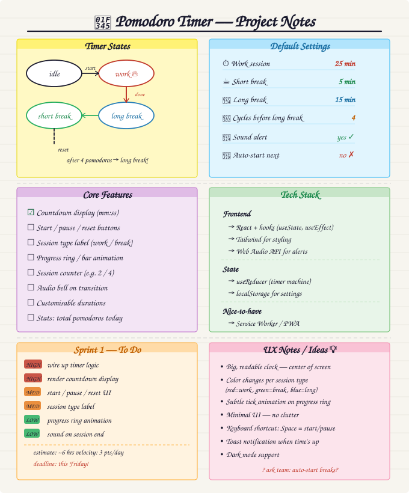

Attendance
- Alice Johnson (Team Lead)
- Bob Smith (Developer)
- Carol Lee (Designer)
- David Chen (Developer)
- Eve Martinez (QA)
Agenda
- Review project requirements
- Discuss tech stack options
- Brainstorm core features
- Assign initial tasks
- Set next meeting date
Unfinished Business
- Team name selection — still need to vote on final name
- GitHub repo setup — David will finish configuring branch protections
New Business
- Tech stack decision: The team agreed to use vanilla HTML, CSS, and JavaScript for the initial prototype.
-
Core features brainstorm:
- Configurable timer duration
- Short and long break intervals
- Task list integration
- Audio notification when timer ends
- Session counter
-
Design direction: Carol will create wireframes by next meeting.
She mentioned wanting a minimalist look with a focus on usability.
The team discussed the importance of keeping the scope manageable for the first sprint. Alice emphasized that we should focus on getting a working timer before adding extra features. Bob suggested referencing the Pomodoro Technique Wikipedia page for standard intervals.
Miscellaneous
Questions and Concerns
- Eve asked about testing strategy — will discuss next meeting
- Bob raised concern about accessibility requirements
- Carol wants clarification on color palette constraints
Next meeting: April 14, 2026 at 3:00 PM.
Location: Zoom (link to be shared via Slack).
Diagrams and Whiteboard Photos
